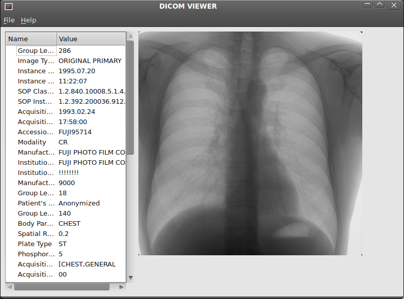
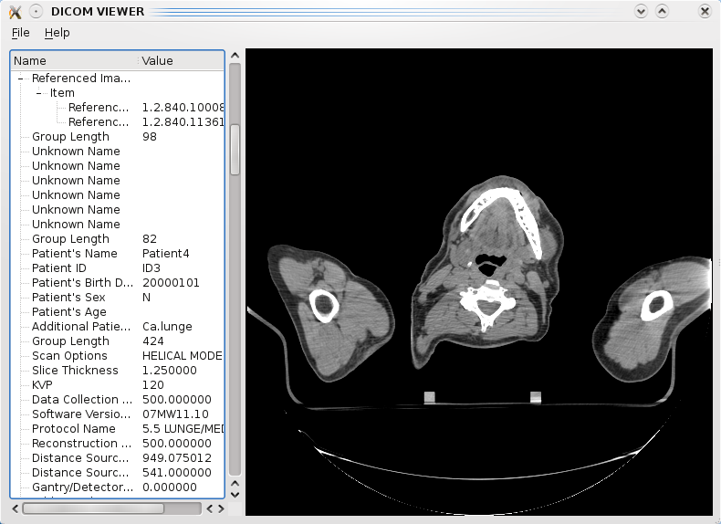
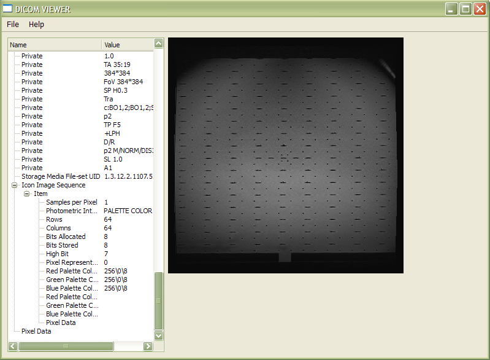

Tutorial 3: Making a DICOM GUI with QtRuby
Build your own cross platform DICOM GUI with the QT4 framework in no-time!
In the first couple of tutorials, we have focused on how you can make some simple scripts using Ruby DICOM to anonymize your data and how to organize your data in a web interface. In this tutorial we will take a look at how you can build a graphical user interface for displaying your DICOM data on your computer.
Lets start with a list of what you'll need for this tutorial:
The goal in this tutorial: To make a simple graphical user interface for displaying your DICOM images. We will use an application framework that is modern, cross platform, open source and esthetically pleasing. Although there are several different frameworks available for use with the Ruby language, like WxRuby, Ruby/GTK, FXRuby and Shoes, my personal favorite is Qt (through QtRuby), and that is what we will use in this tutorial.
Since I'm basically no more than a newbie myself when it comes to Qt and QtRuby, Im not going to try to explain in detail the subtleties of the following code. In fact, I will just print each file that is necessary to make this program work and try to offer a few comments here and there. As such, if you are looking to learn more about QtRuby itself, you should probably have a look at some of the more dedicated QtRuby tutorials available elsewhere on the internet. The purpose of this tutorial will strictly be to show you how you can quickly and easily get started building your own GUI program using ruby-dicom.
File 1: main.rb
The first file is a pretty simple one that just loads all the necessary libraries, builds the application and finally launches it to display it on your screen. The structure of this file is pretty typical for applications using QtRuby, and if you have had a look at some of the QtRuby example applications before, this will probably be quite familiar to you.
# Main file of DICOM viewer. Execute this file to start the program.
# Load necessary libraries:
require 'Qt4'
require 'RMagick'
require 'dicom'
# Load our QtRuby main window class:
require 'main_window'
# Launch the application:
app = Qt::Application.new(ARGV)
win = MainWindow.new
win.show
app.exec
File 2: main_window.rb
In this file we construct a class which defines how our GUI window is going to look like and what kind of actions are going to be carried out when the user interacts with the different menu items. We will make a simple, traditional drop down menu at the top for opening a file, closing the application as well as displaying a small info screen. The general area of the window will be split vertically in two sections, where one widget will contain an information tree structure and the other widget displays the DICOM image.
# Main window of the application (defining GUI layout and actions).
require 'tree_model'
require 'image_widget'
class MainWindow < Qt::MainWindow
slots 'open_file()', 'about()'
attr_reader :image
def initialize(parent=nil)
super(parent)
setupMenus
setupWidgets
setSizePolicy(Qt::SizePolicy.new(Qt::SizePolicy::Fixed, Qt::SizePolicy::Fixed))
setWindowTitle(tr("DICOM VIEWER"))
end
# Displays an information text box:
def about
Qt::MessageBox.information(self, tr("About"), tr("This is a simple DICOM Viewer made with QtRuby."))
end
# Reads the DICOM file, loads image as a RMagick object and transfers information to the tree model and image widget.
def load_dicom(file)
dcm = DICOM::DObject.read(file)
if dcm.read?
# Load image as RMagick object:
@image = dcm.image(:rescale => true)
unless @image # Load an empty image object.
@image = Magick::ImageList.new
@image.new_image(0,0){ self.background_color = "black" }
end
# Add information from the DICOM object to the the tree model and update widgets:
model = TreeModel.new(dcm)
@treeView.model = model
@imageWidget.load_pixmap
else # Failed:
Qt::MessageBox.warning(self, tr("Open file"), tr("Error: Selected file is not recognized as a DICOM file."))
end
end
# Launching open file dialogue.
def open_file
fileName = Qt::FileDialog.getOpenFileName(self, tr("Open file"), "", "DICOM-files (*)")
load_dicom(fileName) unless fileName.nil?
end
# Setting up menu items.
def setupMenus
# Menus:
fileMenu = menuBar().addMenu(tr("&File"))
helpMenu = menuBar().addMenu(tr("&Help"))
# Menu items:
openFile = fileMenu.addAction(tr("&Open..."))
openFile.shortcut = Qt::KeySequence.new(tr("Ctrl+O"))
exitAction = fileMenu.addAction(tr("E&xit"))
exitAction.shortcut = Qt::KeySequence.new(tr("Ctrl+X"))
aboutView = helpMenu.addAction(tr("&About"))
aboutView.shortcut = Qt::KeySequence.new(tr("Ctrl+A"))
# Menu item actions:
connect(openFile, SIGNAL('triggered()'), self, SLOT('open_file()'))
connect(exitAction, SIGNAL('triggered()'), $qApp, SLOT('quit()'))
connect(aboutView, SIGNAL('triggered()'), self, SLOT('about()'))
end
# Setting up the widgets in the main window.
def setupWidgets
# Create a frame which in which widgets will be ordered horisontally:
frame = Qt::Frame.new
frameLayout = Qt::HBoxLayout.new(frame)
@imageWidget = ImageWidget.new(self)
@treeView = Qt::TreeView.new
# Add the two widgets (tree view and image) to the frame:
frameLayout.addWidget(@treeView)
frameLayout.addWidget(@imageWidget)
setCentralWidget(frame)
end
end
Most of the methods in this class are fairly simple and should be rather straightforward to grasp. Although Qt has built in methods to decode and load ordinary image formats, loading straight binary pixel data is necessarily not so simple. I ended up having to use an RMagick object as a bridge between the binary data and the Qt pixelmap object. This works fine for most normal image types, but you should be aware that for very large images, this might be a tad on the slow side. A technique which can be used to speed up the rescaling to presentation values, is to invoke the NArray library. This can cut the image processing time roughly in half (check out the documentation for more details). However, for ordinary images, the speed you get here should be perfectly fine.
Another thing I should probably note is that ruby-dicom, as it is, is somewhat basic in its image handling. It will work perfectly fine for most types of DICOM images, but it is rather simple in its interpretation of the DICOM object (it makes a few assumptions), so do not expect the program as it is to master all kinds of DICOM image cases.
File 3: image_widget.rb
While the previous class took care of the general layout of the application, this class takes care of the specific task of transforming the image data to a pixmap that is understood by Qt, and displaying it on the screen. It is quite basic, since all we do is draw the image. However, if you want to draw some additional information on the screen, or enable some mousclick or mousewheel actions on the image, methods for that can be put in this class.
# Widget for displaying the image data.
# If you want mouse events for interacting with the image, they can be put in this class.
class ImageWidget < Qt::Widget
# Initialize the widget.
def initialize(parent=nil)
@parent = parent
super(parent)
setMinimumSize(512, 512)
@pixmap = Qt::Pixmap.new
end
# This method paints the image to the screen.
def paintEvent(event)
painter = Qt::Painter.new
painter.begin(self)
painter.drawPixmap(0, 0, @pixmap)
painter.end
end
# Converts the RMagick object to a Qt pixmap.
def load_pixmap
blob = @parent.image.to_blob {
self.format = "PGM"
self.depth = 8
}
@pixmap.loadFromData(Qt::ByteArray.fromRawData(blob, blob.size))
update
end
end
File 4: tree_model.rb
In addition to displaying th DICOM image to the screen, we also want to make a presentation of the general information contained in the DICOM object. This will be achieved by constructing a tree model, which allows us to visualize the full hierarchy of data elements (this can be quite helpful in terms of readability when dealing with some of the more complex DICOM modalities which makes heavy use of sequences and items. This class is borrowed from one of the examples that are included in the QtRuby package, with the last two method customized/replaced to work with the structure of the DICOM object.
require 'tree_item.rb'
# Provides a simple tree model that displays the content of the DICOM file.
class TreeModel < Qt::AbstractItemModel
def initialize(dcm, parent=nil)
super(parent)
rootData = Array.new
rootData << Qt::Variant.new("Name") << Qt::Variant.new("Value")
@rootItem = TreeItem.new(rootData)
process_children(dcm.children, @rootItem)
end
def columnCount(parent)
if parent.valid?
return parent.internalPointer.columnCount
else
return @rootItem.columnCount
end
end
def data(index, role)
if !index.valid?
return Qt::Variant.new
end
if role != Qt::DisplayRole
return Qt::Variant.new
end
item = index.internalPointer
return Qt::Variant.new(item.data(index.column))
end
def flags(index)
if !index.valid?
return Qt::ItemIsEnabled
end
return Qt::ItemIsEnabled | Qt::ItemIsSelectable
end
def headerData(section, orientation, role = Qt::DisplayRole)
if orientation == Qt::Horizontal && role == Qt::DisplayRole
return @rootItem.data(section)
end
return Qt::Variant.new
end
def index(row, column, parent)
if !parent.valid?
parentItem = @rootItem
else
parentItem = parent.internalPointer
end
@childItem = parentItem.child(row)
if ! @childItem.nil?
return createIndex(row, column, @childItem)
else
return Qt::ModelIndex.new
end
end
def parent(index)
if !index.valid?
return Qt::ModelIndex.new
end
childItem = index.internalPointer
parentItem = childItem.parent
if parentItem == @rootItem
return Qt::ModelIndex.new
end
return createIndex(parentItem.row, 0, parentItem)
end
def rowCount(parent)
if !parent.valid?
parentItem = @rootItem
else
parentItem = parent.internalPointer
end
return parentItem.childCount
end
def process_children(children, parent)
# Iterate over all children and repeat recursively for any child which is parent:
children.each do |element|
if element.children?
current_item = TreeItem.new([element.name, nil], parent)
parent.appendChild(current_item)
process_children(element.children, current_item)
elsif element.is_a?(DICOM::Element)
parent.appendChild(TreeItem.new([element.name, element.value], parent))
end
end
end
end
File 5: tree_item.rb
The final class is a helper class for the tree model which is used for the individual items that make up the tree model. This is basically a straight copy of the example code from the QtRuby package.
# This is a container for items of data supplied by the tree model.
class TreeItem
attr_reader :childItems
def initialize(data, parent=nil)
@parentItem = parent
@itemData = data
@childItems = Array.new
end
def appendChild(item)
@childItems.push(item)
end
def child(row)
return @childItems[row]
end
def childCount
return @childItems.length
end
def childRow(item)
return @childItems.index(item)
end
def columnCount
return @itemData.length
end
def data(column)
return @itemData[column]
end
def parent
return @parentItem
end
def row
if ! @parentItem.nil?
return @parentItem.childRow(self)
end
return 0
end
end
Finally, we are done with the code! That was perhaps a bit lengthy for a mere tutorial, but taking into consideration that we have a basic, working DICOM GUI that displays both image data and all the data elements in a valid tree structure, I think it's not that bad at all! Putting all these files in the same folder, you can execute your application (not surprisingly) by the following command:
$ ruby main.rb
Screenshots
After page up and page down with code, lets finally have a look at the results! Since Qt is fully cross platform, you can run this on whatever operating system you would like.
Linux
Image: CR Chest X-Ray
System: Ubuntu (using the Gnome 2 desktop manager)

Image: CT Image slice
System: Kubuntu (using the KDE 4 desktop manager)

Windows (XP)
Image: MR Linearity quality assurance phantom image slice

OS X
Unfortunately, I dont have a Mac available so I wont be able to show how this looks on Apple's OS X platform (please feel free to send me a screenshot though if you're trying this out on a Mac).
That's it! I hope you have found this tutorial helpful, and as always: All feedback is appreciated!
Published: May 9th 2009
Last updated: February 22nd 2015
Christoffer Lervåg
chris.lervag @nospam.com @gmail.com